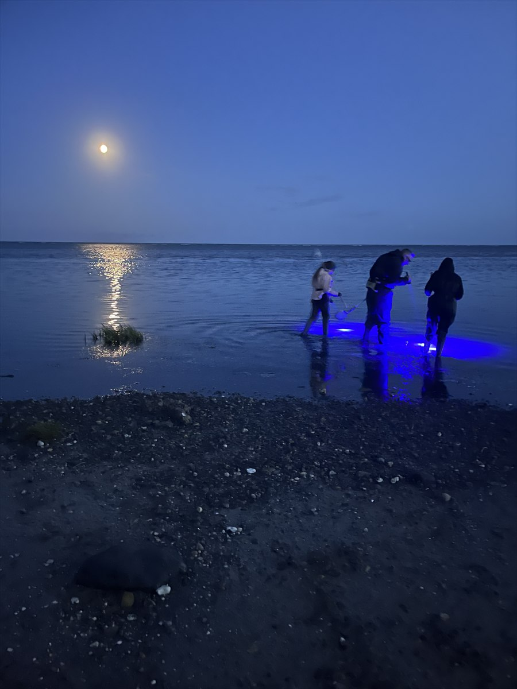

En vurdering – ikke et løfte
RavRadar beregner en RavScore ud fra vejr- og havdata. Lokale forhold kan altid afvige, og selv gode forhold er ingen garanti for fund.
Frivilligt projekt · gratis at bruge
Et værktøj til dig, der gerne vil bruge mindre tid på at gætte og mere tid på at lede de steder, hvor forholdene ser mest lovende ud.
Hvorfor RavRadar?
Mit navn er Jakob Jørgensen, og jeg står bag RavRadar. Ideen opstod, fordi ravjagt kræver, at man holder øje med mange ting på én gang: strøm, bølger, vind, vandstand, kystens retning og det vejrforløb, der gik forud.
Mit mål er at samle den viden i et værktøj, som er let at bruge. RavRadar skal ikke fortælle, præcis hvor et stykke rav ligger. Det skal hjælpe dig med at vælge et bedre tidspunkt og en mere lovende kyststrækning, så du får mest muligt ud af din ravjagt.
RavRadar er samtidig bygget, så du kan se så mange relevante data og forklaringer som muligt uden selv at skulle samle oplysningerne fra mange forskellige steder. Forhåbentlig gør det ikke kun valget af tid og sted lettere, men hjælper dig også med at lære lidt mere om, hvordan strøm, bølger, vind og kystens form påvirker ravjagten.
RavRadar beregner en RavScore ud fra vejr- og havdata. Lokale forhold kan altid afvige, og selv gode forhold er ingen garanti for fund.
Systemet er udviklet ved at samle faglig viden, data, praktiske erfaringer og mange timers analyse. Det bliver forbedret, når ny viden og virkelige ture viser, at noget kan gøres bedre.
RavRadar er gratis at bruge. Et frivilligt bidrag er altid valgfrit og giver hverken bedre scorer eller særlige funktioner.
Vigtigt om RavScore
RavScore fortæller, hvor gode forholdene er for den enkelte kyststrækning lige nu. Den sammenligner altså kysten med dens egne muligheder – ikke hvor meget rav der grundlæggende findes i hele området.
Nogle kyster og landsdele har naturligt bedre forudsætninger for ravjagt end andre. En strækning i Limfjorden kan derfor godt score 95, fordi forholdene dér er usædvanligt gode, mens en strækning ved Sæby scorer 75. Alligevel kan Sæby meget vel give mere rav, fordi udgangspunktet for ravjagt normalt er bedre dér.
Brug derfor RavScore som hjælp til at finde de bedste aktuelle forhold – ikke som et løfte om, at den højest placerede zone altid indeholder mest rav.
En model af virkeligheden
Vejr, vind, havstrømme og kyststrækninger spiller sammen på komplekse måder. Når reglerne skal omsættes til kode for hele Danmark, er det ikke muligt at beskrive enhver lokal undtagelse perfekt. Nogle gange er et kompromis nødvendigt, for at helheden bliver så brugbar og retvisende som muligt.
Du kan derfor støde på noget, der ser ud som en fejl. Det kan være en fejl, som jeg gerne vil høre om, men det kan også være en bevidst forenkling, fordi en mere detaljeret regel ville gøre vurderingen dårligere andre steder.

Ravjagt er også tid sammen
Jeg bruger selv mange timer ved kysten – også sammen med mine børn, når de en sjælden gang har lyst. For mig handler ravjagt både om nysgerrighed, natur, fordybelse og de oplevelser, man får undervejs. RavRadar er lavet for at hjælpe både nye og erfarne ravjægere med at få mere ud af netop de timer.
Et personligt fritidsprojekt
RavRadar er ikke blevet til som et hurtigt standardprojekt. Det har krævet rigtig mange timer at undersøge ravets bevægelse, opbygge modellerne, gennemgå kysterne, udvikle funktionerne og gøre forklaringerne forståelige.
Siden er gratis at bruge, men den har kostet penge at udvikle. Jeg betaler også løbende for blandt andet licenser, domæne og den øvrige drift, der holder RavRadar kørende og opdateret.
Hvis RavRadar har givet dig et bedre overblik eller en god tur ved kysten, må du gerne støtte projektet med et frivilligt beløb via MobilePay. Bidrag hjælper med de løbende udgifter til licenser og drift.
RavRadar er og bliver gratis at bruge, uanset om du støtter eller ej.
MobilePay Box: 4214MX
Åbn MobilePay-boksenhttps://qr.mobilepay.dk/box/8f2b226a-fd43-43f2-8610-1fa0df857c63/pay-in
Kontakt
Jeg vil gerne høre fra dig, hvis du opdager en fejl, har en idé eller vil dele en erfaring, som kan gøre RavRadar bedre.